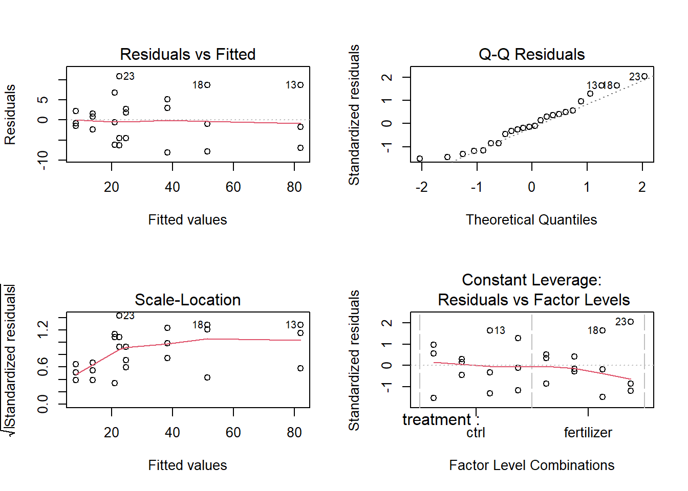
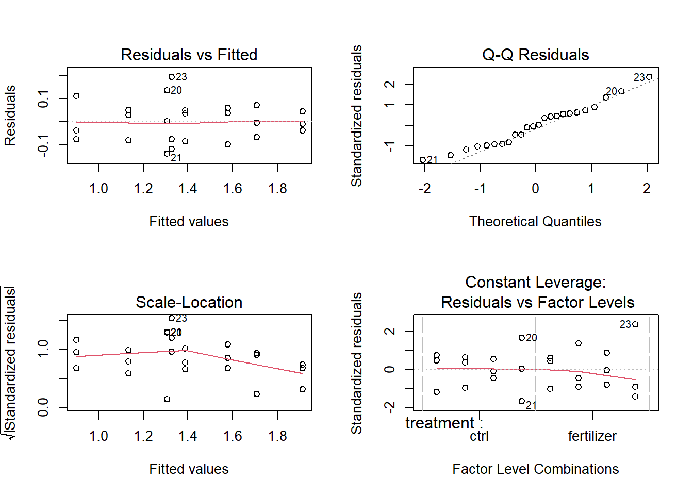
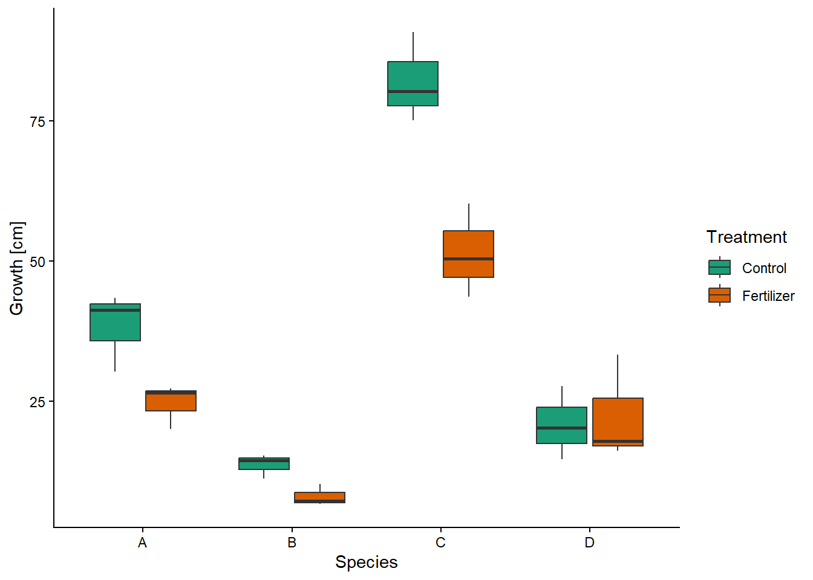
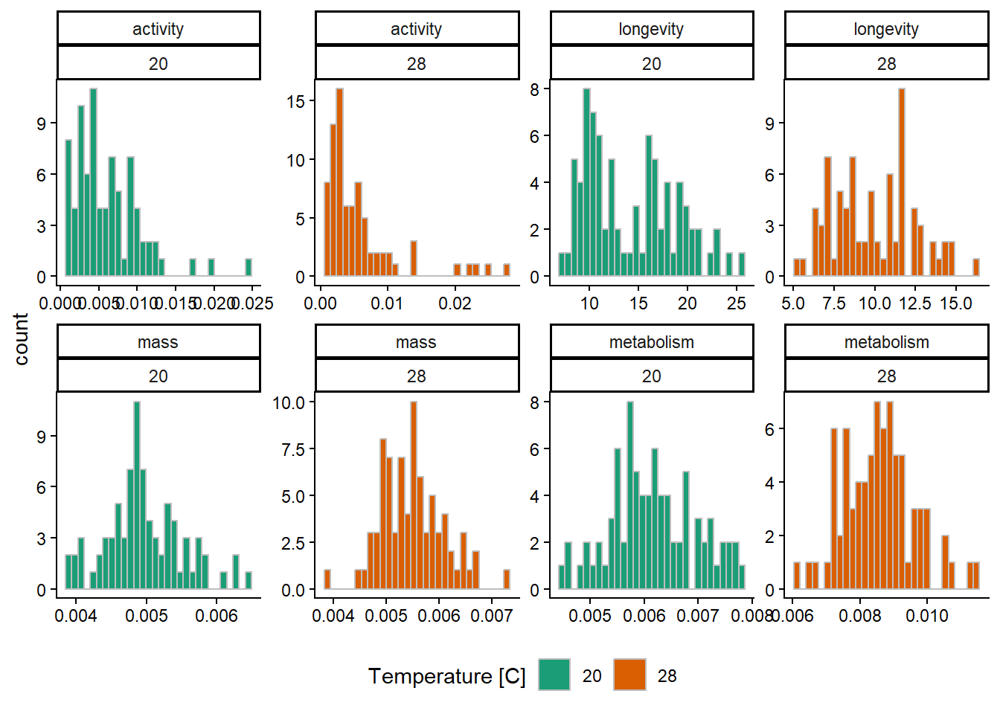
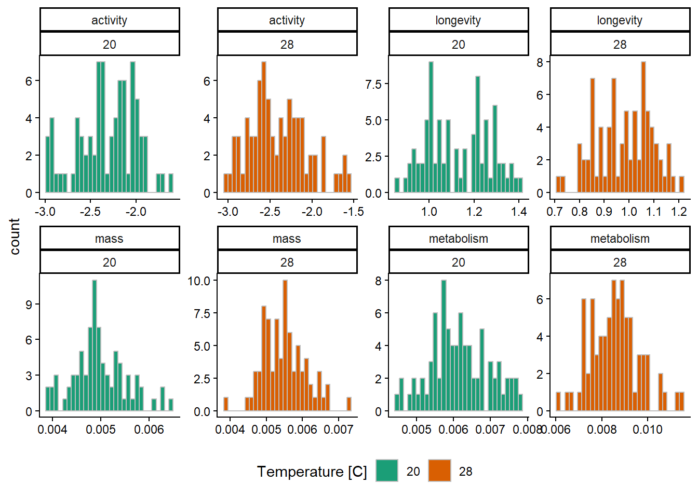

larvae <- rbind(
spring = c("dark brown" = 17, "light brown" = 34, "green" = 53),
summer = c(113, 113, 73)
)Practice exam 2024
Question 1)
Data
| dark brown | light brown | green | |
|---|---|---|---|
| spring | 17 | 34 | 53 |
| summer | 113 | 113 | 73 |
a)
Because we have counts for categories, a chi-square test would be appropriate. The null hypothesis is that there is no difference in frequency between any groups.
Pearson's Chi-squared test
data: larvae
X-squared = 28.945, df = 2, p-value = 5.185e-07b)
The chi-square test on the full dataset indicated that there is a difference between at least one of the groups (X2 = 28.95, df = 2, p = 5.19e-10).
c)
There is a difference between the three color-morphs where the brown larvae are fewer than expected in spring and green larvae are more abundant. In summer the relationship is reversed with more brown and fewer green larvae. (As seen by comparing observed and expected counts.) This correlates with the original hypothesis about camouflage, although the counts are overall much lower in spring which may be cause for concern.
d)
Additional tests could be to perform post-hoc pairwise chi-square tests to determine between which groups the difference is. Note that the p-values need to be adjusted.
e)
Improvements to the experimental design could be collecting data over several years to account for seasonal variation/cycles. Additional variables can be measured, such as temperature, percipitation, preadators. The experiment could also be performed at different geographical locations. Such information gives information on variable factors in the uncontrolled environmnet and may help explain variation or highlight trends.
Question 2)
Data
| treatment | Species | growth_mean |
|---|---|---|
| ctrl | A | 38.4 |
| ctrl | B | 13.7 |
| ctrl | C | 82.1 |
| ctrl | D | 20.9 |
| fertilizer | A | 24.6 |
| fertilizer | B | 8.1 |
| fertilizer | C | 51.5 |
| fertilizer | D | 22.5 |
a)
For investigating the difference in growth based on two factors, a two-way ANOVA is appropriate. The main null hypothesis is that there is no difference in growth based on the treatment. Addidtional null hypothesies are that there is no difference in growth based on species nor the interaction between treatment and species.
b)
Inspecting the residuals indicate that they look ok enough because ANOVA is a pretty robust method. The within groups variation is not compleately even across the dataset (left-hand residual plots) but there don’t seem to be any problematic outliers (right-hand plots).

growth ~ treatment * Species.We could attempt a log10 transformation to make the spread of residuals a little more homogenous. This improves the model slightly but also makes the results harder to interpret biologically so I don’t consider the improvement worth the transformation.

log10(growth) ~ treatment * Species.c)

d)
The ANOVA indicates that there is a difference based on treatment (F = 20.78, df = 1, p = 0.0003), species (F = 83.3, df = 3, p = 5.58e-10), and their interaction (F = 6.8, df = 3, p = 0.0036).
To investigate between which groups the difference lies, I perform post-hoc analysis using TukeyHSD. This indicates a difference based on treatment (as expected since there are only two groups), as well as a difference between all pairings of species except D vs A. Species D vs B is questionable as the adjusted p-value is very close to 0.05 (p adj = 0.048).
I will omit a detailed interpretation of the interaction as it is verbose and not the main focus of the study. There is no difference due to the interaction within species A nor B.
e)
My conclusion is that fertilizer should not be used as for all occasions where there is a difference between means in growth the fertilization treatment yielded less growth compared to the control.
Question 3)
a)
- F = 110.7 / (2440.2 / 2111) = 95.77
- P = pf(95.77, 1, 2111) = 3.79e-22
- R2 = 110.7 / (110.7 + 2440.2) = 0.043
b)
While the p-value indicates that sun exposure has an effect, the R2-value is very low and indicates no true correlation. As a whole I would, therefore, not draw the conclusion that sun-bathing plays a significant role in developing skin cancer compared to other possible factors. The “self-reported” aspect is a difficult variable to use as basis for extrapolating to the population due to the uncertainty in accuracy.
c)
I am assuming a regression was performed to produce what is given (R2), which is possible given that the scale for skin-cell changes is treated as a continous variable. This is possible depending on how the ordinal scale is defined. I would have prefered to treat it as an ordinal factor and perform an ANOVA.
The uncertainty in the self-reported exposure variable could maybe be mitigated somewhat by binning the values into ordinal categories. Then a chi-squared test could be performed (or ANOVA with skin-cell changes as continous).
d)
This is an observational study as no controlled experiment/intentional treatment was performed (that being the main difference).
The ethical limitations on purposefully exposing people to a potentially cancer inducing treatment make it impossible to perform an experimental version of this same study. However, it could be done using animal models. The benefit of an observational study is that it attempts to directly measure the real world circumstances and any conclusions are therefore easier to extrapolate to the rest of the population compared to other model systems.
Question 4)
a)
| temp | mass | metabolism | activity | longevity |
|---|---|---|---|---|
| 20 | 0.0049648 | 0.0061640 | 0.0061383 | 14.209053 |
| 28 | 0.0054965 | 0.0085852 | 0.0056669 | 9.892801 |

The variables mass and metabolism appear to be reasonably normaly distributed. While longevity is more questionable but not terrible, activity is heavily skewed. Applying a log10 transformation to activity and longevity makes the distributions look better.

b)
Importance of components:
PC1 PC2 PC3 PC4
Standard deviation 1.3599 1.0405 0.9297 0.45114
Proportion of Variance 0.4624 0.2707 0.2161 0.05088
Cumulative Proportion 0.4624 0.7330 0.9491 1.00000Standard deviations (1, .., p=4):
[1] 1.3599456 1.0405493 0.9296672 0.4511361
Rotation (n x k) = (4 x 4):
PC1 PC2 PC3 PC4
mass -0.6362048 0.2306975 -0.3554492 -0.644730987
metabolism -0.6790526 -0.1562222 -0.1559050 0.700125616
activity 0.2924374 -0.4855833 -0.8237856 -0.008156896
longevity 0.2204802 0.8286025 -0.4131910 0.306723884